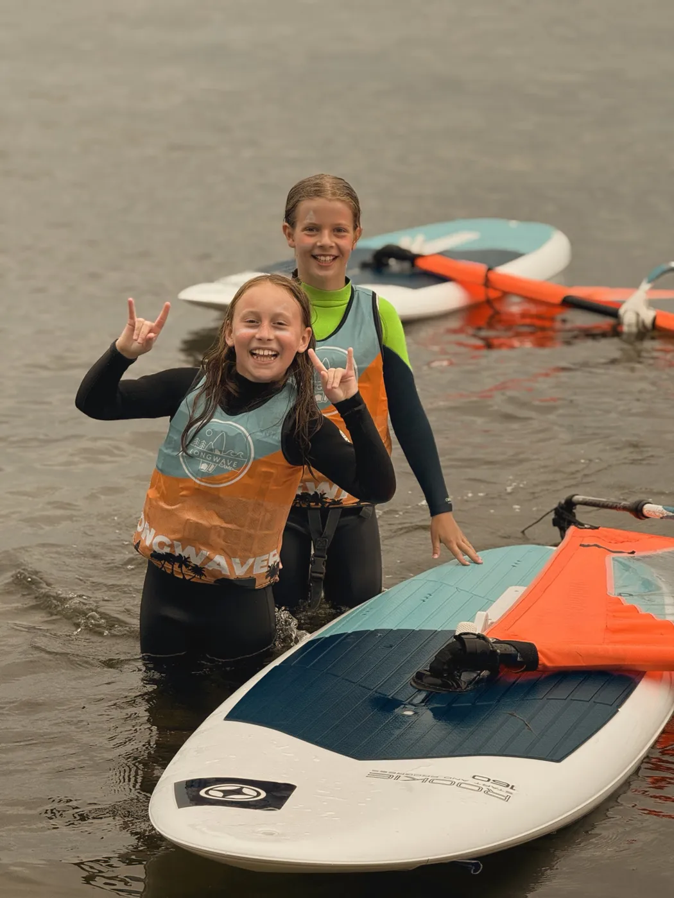

SPORTY WODNE NAD ZATOKĄ
Windsurfing, SUP-y i nowe umiejętności pod okiem instruktorów.

Zamieniamy szkolne ławki na przygodę!
Kilka dni nad morzem, mnóstwo ruchu, nowe doświadczenia i czas spędzony razem poza szkolną codziennością!
Zabieramy Was na Półwysep Helski, gdzie łączymy sporty wodne, aktywności na świeżym powietrzu, warsztaty i odkrywanie przyrody Bałtyku.
Windsurfing, SUP-y, park linowy, rowerowe wyprawy, gry integracyjne i kreatywne zajęcia to tylko część możliwości.
Każdą Zieloną Szkołę przygotowujemy z uwzględnieniem wieku uczniów, zainteresowań grupy i potrzeb nauczycieli.
Gotowi na wspólne przygody, których nie znajdziecie w szkolnym planie lekcji?!
Windsurfing, SUP-y i nowe umiejętności pod okiem instruktorów.
Surferskie miejsce LONGWAVE w Jastarni.
Park linowy, rowery, plaże i odkrywanie nowych miejsc.
Przyroda Bałtyku, pierwsza pomoc, warsztaty i integracja.
Uważamy, że najlepsze lekcje często odbywają się poza szkolną salą!
Podczas Zielonych Szkół LONGWAVE stawiamy na aktywność, rozwijanie zainteresowań i wspólne doświadczenia.
Chcemy, żeby uczniowie mieli okazję spróbować nowych sportów, nauczyć się czegoś praktycznego, lepiej się poznać i po prostu świetnie spędzić czas.
Jednym z głównych punktów programu mogą być zajęcia windsurfingowe na Zatoce Puckiej. Dla wielu uczestników będzie to pierwsze spotkanie z deską i żaglem!
Ale nie ograniczamy się tylko do sportów wodnych.
Wycieczki rowerowe, park linowy, warsztaty pierwszej pomocy, poznawanie morskiej przyrody, gry zespołowe, kreatywne zajęcia i wieczorne integracje, możliwości jest naprawdę dużo.

Naszym miejscem na Półwyspie Helskim jest LONGWAVE HOME SPOT, położony na terenie kempingu Molo Surf w Jastarni.
To tutaj możemy połączyć zakwaterowanie, aktywny wypoczynek i surferską atmosferę w jednym miejscu.
Bliskość Zatoki Puckiej i szkoły sportów wodnych pozwala nam sprawnie organizować zajęcia, a infrastruktura kempingu daje wiele możliwości spędzania czasu także poza wodą.
Uczestnicy mieszkają w strefie noclegowej LONGWAVE, w przytulnych domkach utrzymanych w surferskim klimacie.
Lokalizacja: LONGWAVE HOME SPOT, kemping Molo Surf, Jastarnia.
Szczegóły zakwaterowania, rozkład miejsc i dostępność bazy ustalamy indywidualnie z każdą szkołą.

Kadry LONGWAVE


Zestaw atrakcji dobieramy do grupy. Park linowy, zwiedzanie i zajęcia prowadzone przez zewnętrzne instytucje organizujemy po potwierdzeniu dostępności, zasad udziału i kosztów.
Dla szkół podstawowych i ponadpodstawowych.
Zapraszamy klasy i grupy szkolne, które chcą połączyć wspólny wyjazd z aktywnością, edukacją i integracją.
Nie trzeba umieć pływać na windsurfingu ani mieć doświadczenia w sportach wodnych. Program przygotowujemy tak, aby uczniowie mogli poznawać nowe aktywności na poziomie odpowiednim do swojego wieku i umiejętności.
Każda klasa jest inna, dlatego nie proponujemy jednego sztywnego scenariusza.
Więcej sportu? Więcej edukacji przyrodniczej? A może przede wszystkim integracja klasy? Dopasujemy program do Was!
W LONGWAVE stawiamy na kameralną atmosferę, sprawdzone miejsca i zajęcia prowadzone przez odpowiednio przygotowane osoby.
Szczegółowy podział obowiązków między LONGWAVE a opiekunami szkolnymi ustalamy przed wyjazdem.
Przy aktywnym programie nie może zabraknąć czasu na dobry posiłek i regenerację!
W przykładowym harmonogramie uwzględniamy trzy posiłki dziennie: śniadanie, obiad i kolację.
Zakres wyżywienia, sposób organizacji posiłków oraz potrzeby dietetyczne uczniów ustalamy z placówką podczas przygotowywania oferty.
Dbamy też o to, aby pomiędzy zajęciami był czas na odpoczynek, nawodnienie i spokojne przygotowanie się do kolejnych aktywności.

Poranny rozruch, stretching lub joga na świeżym powietrzu. Aktywne rozpoczęcie dnia i chwila na złapanie dobrej energii.
Ładujemy baterie przed zajęciami.
Dwugodzinny blok windsurfingowy. Uczestnicy dzielą się na grupy dopasowane do wieku i umiejętności. Poznajemy podstawy, ćwiczymy na wodzie i zdobywamy nowe doświadczenia pod okiem instruktorów.
Wspólny posiłek po aktywnym przedpołudniu.
Chwila odpoczynku i przygotowanie do popołudniowych zajęć.
SUP-y, skimboard, trickboard, warsztaty LONGWAVE, gry terenowe lub integracyjne w zależności od programu i pogody.
Wspólny posiłek i chwila na podsumowanie dnia.
Warsztaty kreatywne, gry zespołowe, quizy, zajęcia integracyjne lub wieczór filmowy.
Czas na wyciszenie, wspólne kino, przygotowanie do kolejnego dnia.
To przykładowy dzień z zajęciami windsurfingowymi. Program może wyglądać inaczej w dniu wycieczki do Helu, wyprawy rowerowej lub wyjazdu do parku linowego.
Nie każdy dzień musi wyglądać tak samo!
Możemy przygotować również całodniowy program odkrywania Półwyspu Helskiego. Przykładowo:
Park linowy, zadania zespołowe, spacer po lesie i plaży.
Fokarium, edukacja morska, spacer na cypel i poznawanie historii półwyspu.
Wycieczka trasami rowerowymi z przystankami na odpoczynek, poznawanie okolicy i zadania przyrodnicze.
Takie dni planujemy osobno, żeby nie łączyć zbyt wielu atrakcji i zostawić uczniom czas na spokojne korzystanie z wyjazdu.

Podajcie wiek uczniów, liczbę uczestników, preferowany termin i oczekiwania.
Sportowy, przyrodniczy, integracyjny lub łączący wszystkie te elementy.
Dobieramy zakwaterowanie, wyżywienie, zajęcia i ewentualne atrakcje poza bazą.
Wspólnie realizujemy ustalony program, z uwzględnieniem pogody i potrzeb grupy.
Macie ochotę na Zieloną Szkołę, podczas której uczniowie spróbują nowych sportów, poznają przyrodę Bałtyku i przede wszystkim spędzą razem świetny czas?
Napiszcie do nas! Nie musicie mieć gotowego planu. Chętnie przygotujemy program dopasowany do Waszej klasy.
ZAPYTAJ O ZIELONĄ SZKOŁĘ
Oferta i cena ustalane indywidualnie dla każdej grupy.
Porozmawiajmy o Twoim wyjeździe
Opowiedz nam, co planujesz. Pomożemy dobrać wyjazd, termin lub program dla Twojej grupy.